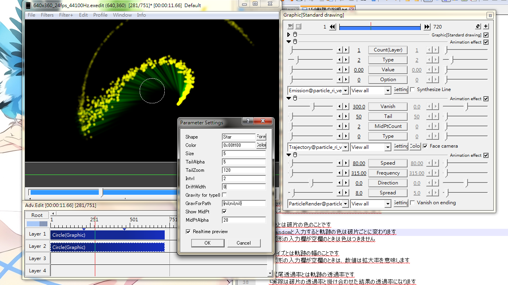

Fig15: Adding tails to particles. This particle object is tracking another object using Emission@ type 1 and the path forms a loop in the center of the screen. Particle is colored yellow while the tail is colored green.
Trajectory / Tail
Attach a tail of some sort to each particle.
Sliders
Vanish
Positive number: The duration from particle's survival time to the disappearance of the tail.
Negative number: Tail vanish when particle's survival time expires.
Tail
The number of shapes used to make up a tail.
The length of a tail is given by (Tail-1)*Intvl
Intvl is set in the Setting dialog.
MidPtCount
The number of particles to be displayed on the path yet to be run through.
Effective only when "Show MidPt" in the dialog is checked.
Type
0: the tail is where a particle has passed through.
1: Join particle emission origins with straight lines.
2: Disable this effect.
Check box
Face camera: when using with Camera control and if checked, the shapes that make up the tail will automatically turn and face towards the camera.
Setting dialog
Shape
The shape that makes up the tail.
Assume the base object shape if left empty.
Color
Color of the tail.
No effect if the "Shape" field above is not defined.
Enter random to randomize color for each tail.
Size
Width of tail.
Same meaning as Zoom% if "Shape" field is left empty.
TailAlpha
A transparency factor for the tail that is to be multiplied with particles' alpha value.
TailZoom
Determine the size of the tail tip.
Intvl
The distance between successive shapes that make up the tail.
DriftWidth
Add a little offset from the original tail location
Gravity for type 0
Enable gravity, Wind@ and FluxField to act on the tail when Type slider is zero.
GravForPath
The gravity to be applied to tails.
{GravityX,GravityY,GravityZ}
A single value sets GravityY only.
Leave this blank or {nil,nil,nil} to use the gravity settings from ParticleRender@ and Depth_n'Grid@
Show MidPt
Show particles on path that has yet to be passed.
MidPtAlpha
Alpha value for future path when "Show MidPt" is checked.